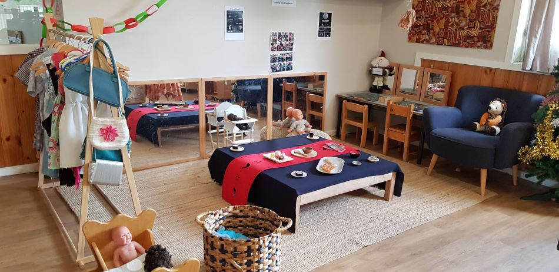

Designing the play environments responsively and effectively is necessary to promote the development and wellbeing of the infants and the toddlers. It is at this point that children receive all their learning through sensation, social traits and action (Berk, 2009). One key factor contained in the Early Years Learning Framework (DEEWR, 2016) is that the environment plays a major role in cultivating a sense of belonging and identity.
The Reggio Emilia-inspired practices refer to the environment as the third teacher that allows exploring and creativity due to flexible spaces and open-ended materials (Garvis et al., 2019). Teachers may amplify growth through resources that are exorbitant in the senses, comfortable furniture, and calm spaces to foster emotional safety.
Cultural responsiveness is important as well, children need to see and recognize something familiar and associated with the community to feel secure and in tune with the environment (Kaywork, 2020). Blocks, fabrics, and natural items are the materials that provide different types of play styles (Petty, 2016).
Purposeful design assists children in agency, autonomy, and provides a solid steppingstone towards learning in the future (Garvis et al., 2019).